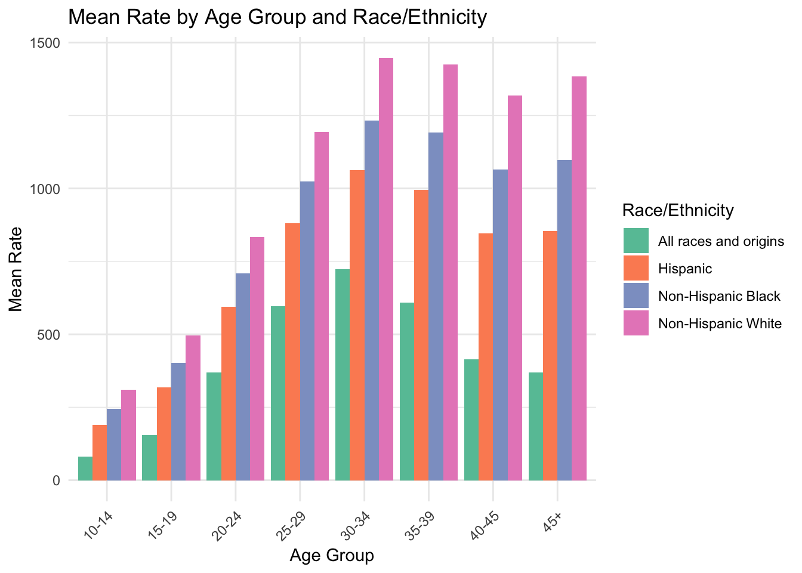

CDC Data Exploration: Quarterly Provisional Estimates for Selected Birth Indicators
This exercise utilizes different data processing techniques to explore CDC-produced data.
Description of the data
This dataset comes from the National Center for Health Statistics (NCHS) and is a part of the CDC’s National Vital Statistics System. The data is a quarterly release of provisional estimates of selected reproductive indicators including general fertility rates, age-specific birth rates, total and low-risk cesarean delivery rates, preterm birth rates, and other gestational age categories.
Here, I loaded all the packages I will use for this data exercise, listed below. I also read in the data from the csv file, and I called the data cdcdata. We can see that there are 8 variables and 1100 observations. This dataset has multiple indicators stacked on top of each other. For example, within the “Topic” column, there are metrics for “Birth Rate”, “Gestational Age,” etc., each measuring a very different outcome. Instead of widening the dataset (splitting the data into multiple tables, one for each metric), I am going to make things easier by looking at one metric, “Age-specific Birth Rates,” which I will get to below.
#Loading packageslibrary(tidyverse) #This includes ggplot2, tidyr, readr, dplyr, stringr, purr, forcatslibrary(knitr)library(here)library(kableExtra)#Reading in the csv filecdcdata <-read_csv(here("cdcdata-exercise", "NCHS_VSRR_Quarterly_provisional_estimates_for_selected_birth_indicators_20240205.csv"))#Checking the packaging (displaying first and last few rows of data)nrow(cdcdata)
# A tibble: 6 × 8
`Year and Quarter` Topic `Topic Subgroup` Indicator Race Ethnicity Categ…¹
<chr> <chr> <chr> <chr> <chr>
1 2021 Q1 NICU Adm… NICU Admission … NICU Adm… Non-Hispanic Black
2 2021 Q1 NICU Adm… NICU Admission … NICU Adm… Non-Hispanic White
3 2021 Q1 Source o… Medicaid Medicaid All races and origins
4 2021 Q1 Source o… Medicaid Medicaid Hispanic
5 2021 Q1 Source o… Medicaid Medicaid Non-Hispanic Black
6 2021 Q1 Source o… Medicaid Medicaid Non-Hispanic White
# ℹ abbreviated name: ¹`Race Ethnicity Category`
# ℹ 3 more variables: Rate <dbl>, Unit <chr>, Significant <chr>
This dataset is pretty untidy. The “Year and Quarter” column is a combination of the year and the quarter. I will separate this column into two columns, “Year” and “Quarter”, and convert them to numeric. In addition, the “Topic” and “Topic Subgroup” columns have multiple indicators listed in the same column. I will be looking at the observations only for “Birth Rates” and will remove all other observations. I will also replace the space with an underscore in the “Topic” column where it contains “Birth Rates.”
#This section was written with help from ChatGPT.#Get column namescolnames(cdcdata)
With our new dataset, called cdcdata_birth_rates, we can see that the “Year and Quarter” column has been separated into “Year” and “Quarter” columns, and the “Topic” column has been modified to replace the space with an underscore where it contains “Birth Rates.” We can also see that the “Topic” column contains only “Birth Rates” observations. This gives us 9 columns (variables) and 572 rows (observations).
Additionally, the “Topic” and “Subtopic” columns are redundant in that the “Subtopic” column is the true indicator we are looking for, and we can remove the “Topic” column. The same issue we had in the “Topic” column is also present in the “Topic Subgroup” column. We will remove the “Topic” column and filter the dataset to include only observations where the “Topic Subgroup” column is exactly “Age-specific Birth Rates.” We will also replace “Age-specific Birth Rates” with “Age_Specific” in the “Topic Subgroup” column.
#This section was written with help from ChatGPT.#Remove the "Topic" columncdcdata1 <- cdcdata1 %>%select(-Topic)#Filter the dataset to include only observations where the "Topic Subgroup" column is exactly "Age-specific Birth Rates"cdcdata1 <- cdcdata1 %>%filter(`Topic Subgroup`=="Age-specific Birth Rates")#Replace "Age-specific Birth Rates" with "Age_Specific" in the "Topic Subgroup" columncdcdata1 <- cdcdata1 %>%mutate(`Topic Subgroup`=str_replace(`Topic Subgroup`, "Age-specific Birth Rates", "Age_Specific"))#Remove the "Topic Subgroup" column and rename dataframecdcdata2 <- cdcdata1 %>%select(-`Topic Subgroup`)#Print the modified cdcdata datasetprint(cdcdata2)
# A tibble: 352 × 7
Year Quarter Indicator `Race Ethnicity Category` Rate Unit Significant
<dbl> <dbl> <chr> <chr> <dbl> <chr> <chr>
1 2023 3 10-14 years All races and origins 0.2 per 1,… <NA>
2 2023 3 10-14 years Hispanic 0.3 per 1,… <NA>
3 2023 3 10-14 years Non-Hispanic Black 0.4 per 1,… *
4 2023 3 10-14 years Non-Hispanic White 0.1 per 1,… <NA>
5 2023 3 15-19 years All races and origins 13.4 per 1,… *
6 2023 3 15-19 years Hispanic 21.3 per 1,… *
7 2023 3 15-19 years Non-Hispanic Black 19.7 per 1,… *
8 2023 3 15-19 years Non-Hispanic White 8.7 per 1,… *
9 2023 3 20-24 years All races and origins 56 per 1,… *
10 2023 3 20-24 years Hispanic 78.3 per 1,… *
# ℹ 342 more rows
Now, we have 7 columns (variables) and 352 observations, since we are only looking at age-specific birth rates, we don’t need a column with that information.
Now let’s clean up the rest of the column names and observation entries, removing spaces and recategorizing variables.
#This section was written with help from ChatGPT.#Renaming columnscdcdata2 <- cdcdata2 %>%rename(Age_Years = Indicator)cdcdata2 <- cdcdata2 %>%rename(Race_Ethnicity =`Race Ethnicity Category`)#Define the specific levels for the "Race_Ethnicity" categoryrace_ethnicity_levels <-c("All races and origins", "Hispanic", "Non-Hispanic Black", "Non-Hispanic White")#Convert the "Race Ethnicity Category" column to a factor variable with custom levelscdcdata2$Race_Ethnicity <-factor(cdcdata2$Race_Ethnicity, levels = race_ethnicity_levels)#View the levels of the "Race_Ethnicity" columnlevels(cdcdata2$Race_Ethnicity)
[1] "All races and origins" "Hispanic" "Non-Hispanic Black"
[4] "Non-Hispanic White"
#Get unique age category levels from the "Age_Years" columnage_levels <-unique(cdcdata2$Age_Years)#Convert the "Age_Years" column to a factor variable with custom levelscdcdata2$Age_Years <-factor(cdcdata2$Age_Years, levels = age_levels)#View the levels of the "Age_Years" columnlevels(cdcdata2$Age_Years)
#Print the modified cdcdata datasetprint(cdcdata2)
# A tibble: 352 × 7
Year Quarter Age_Years Race_Ethnicity Rate Unit Significant
<dbl> <dbl> <fct> <fct> <dbl> <chr> <chr>
1 2023 3 10-14 years All races and origins 0.2 per 1,000 … <NA>
2 2023 3 10-14 years Hispanic 0.3 per 1,000 … <NA>
3 2023 3 10-14 years Non-Hispanic Black 0.4 per 1,000 … *
4 2023 3 10-14 years Non-Hispanic White 0.1 per 1,000 … <NA>
5 2023 3 15-19 years All races and origins 13.4 per 1,000 … *
6 2023 3 15-19 years Hispanic 21.3 per 1,000 … *
7 2023 3 15-19 years Non-Hispanic Black 19.7 per 1,000 … *
8 2023 3 15-19 years Non-Hispanic White 8.7 per 1,000 … *
9 2023 3 20-24 years All races and origins 56 per 1,000 … *
10 2023 3 20-24 years Hispanic 78.3 per 1,000 … *
# ℹ 342 more rows
We can see that we have multiple missing entries for the “Significant” Column. From the data dictionary on the website, the CDC defines the “Significant” variable as follows: “An asterisk (*) indicates that estimates for the most recent quarter are significantly different from the same quarter of the previous year.” This variable is not relevant for this analysis, so we can remove this column from the dataset. When CDC calculated rates, they had population size in each group, and thus could calculate significance.
But first, let’s just check how many observations are missing an asterisk in the “Significant” column.
# Count the number of NA values in the "Significant" columnna_count <-sum(is.na(cdcdata2$Significant))# Print the number of NA valuesprint(na_count)
[1] 327
We can see that 327 of the 352 observations were not significantly different from the same quarter of the previous year.
Now, let’s remove that column/variable altogether.
#Remove the "Significant" columncdcdata2 <- cdcdata2 %>%select(-Significant)#Print the new datasetprint(cdcdata2)
# A tibble: 352 × 6
Year Quarter Age_Years Race_Ethnicity Rate Unit
<dbl> <dbl> <fct> <fct> <dbl> <chr>
1 2023 3 10-14 years All races and origins 0.2 per 1,000 population
2 2023 3 10-14 years Hispanic 0.3 per 1,000 population
3 2023 3 10-14 years Non-Hispanic Black 0.4 per 1,000 population
4 2023 3 10-14 years Non-Hispanic White 0.1 per 1,000 population
5 2023 3 15-19 years All races and origins 13.4 per 1,000 population
6 2023 3 15-19 years Hispanic 21.3 per 1,000 population
7 2023 3 15-19 years Non-Hispanic Black 19.7 per 1,000 population
8 2023 3 15-19 years Non-Hispanic White 8.7 per 1,000 population
9 2023 3 20-24 years All races and origins 56 per 1,000 population
10 2023 3 20-24 years Hispanic 78.3 per 1,000 population
# ℹ 342 more rows
So, for our final dataset, we have 352 observations and 6 variables! However, in our exporatory analysis, we are going to look at the average of the rates over the entire 11 quarter time period, so we will drop the variables “Year”, “Quarter”, and “Unit” since they are not relevant for this analysis. All units are the same (per 1,000 population). This gives us 3 variables (Age_Years, Race_Ethnicity, and Rate).
Now let’s begin to explore the data. We can’t show the percentage of observations in each category because we only have rate and not the population size. We also can’t summarize the variables in a way that can be described in a distribution because we don’t have the population size, just the final rates for each group.
We can ask: within each Race_Ethnicity category (All races and origins, Hispanic, Non-Hispanic Black, and Non-Hispanic White), how does the birth rate change across age groups during this 11-quarter period?
First, let’s summarize the data so that we get the mean and standard deviation for each age group according to race_ethnicity.
#Collapse data by Age_Years and Race_Ethnicitycdcdata2_agg <- cdcdata2 %>%group_by(Age_Years, Race_Ethnicity) %>%summarise_all(list(mean = mean, sd = sd)) %>%ungroup()#Make a table using knitrknitr::kable(cdcdata2_agg, caption ="Mean and Standard Deviation of Birth Rates by Age")
Mean and Standard Deviation of Birth Rates by Age
Age_Years
Race_Ethnicity
mean
sd
10-14 years
All races and origins
0.2000000
0.0000000
10-14 years
Hispanic
0.3000000
0.0000000
10-14 years
Non-Hispanic Black
0.3545455
0.0522233
10-14 years
Non-Hispanic White
0.1000000
0.0000000
15-19 years
All races and origins
13.8181818
0.3789939
15-19 years
Hispanic
21.3000000
0.3193744
15-19 years
Non-Hispanic Black
21.1636364
1.1595454
15-19 years
Non-Hispanic White
9.2181818
0.3341203
20-24 years
All races and origins
60.2818182
1.9898835
20-24 years
Hispanic
81.8909091
1.8019182
20-24 years
Non-Hispanic Black
76.3454545
4.4362966
20-24 years
Non-Hispanic White
50.6272727
1.8363501
25-29 years
All races and origins
92.6090909
1.1076593
25-29 years
Hispanic
110.3090909
3.8386077
25-29 years
Non-Hispanic Black
90.9818182
1.5879661
25-29 years
Non-Hispanic White
90.5363636
0.9254974
30-34 years
All races and origins
96.4363636
1.3086426
30-34 years
Hispanic
99.2727273
3.9678939
30-34 years
Non-Hispanic Black
79.1909091
0.7879778
30-34 years
Non-Hispanic White
99.9000000
1.4303846
35-39 years
All races and origins
53.8363636
1.5711605
35-39 years
Hispanic
56.8000000
2.8722813
35-39 years
Non-Hispanic Black
49.0000000
1.5244671
35-39 years
Non-Hispanic White
52.0727273
1.1816014
40-44 years
All races and origins
12.1909091
0.4678772
40-44 years
Hispanic
14.8636364
0.7500303
40-44 years
Non-Hispanic Black
13.2454545
0.6486349
40-44 years
Non-Hispanic White
10.4454545
0.2769969
45+ years
All races and origins
1.0090909
0.0943880
45+ years
Hispanic
1.0636364
0.1206045
45+ years
Non-Hispanic Black
1.2909091
0.1445998
45+ years
Non-Hispanic White
0.8363636
0.0809040
print(cdcdata2_agg)
# A tibble: 32 × 4
Age_Years Race_Ethnicity mean sd
<fct> <fct> <dbl> <dbl>
1 10-14 years All races and origins 0.2 0
2 10-14 years Hispanic 0.3 0
3 10-14 years Non-Hispanic Black 0.355 0.0522
4 10-14 years Non-Hispanic White 0.1 0
5 15-19 years All races and origins 13.8 0.379
6 15-19 years Hispanic 21.3 0.319
7 15-19 years Non-Hispanic Black 21.2 1.16
8 15-19 years Non-Hispanic White 9.22 0.334
9 20-24 years All races and origins 60.3 1.99
10 20-24 years Hispanic 81.9 1.80
# ℹ 22 more rows
These are all stable measures because the SDs are small.
For each race/ethnic group, I will plot the mean rate for each age group. I am not plotting the rate for each age group and race/ethnic group over time because that would result in 32 lines, and that would be a very messy figure. Instead, I will plot the mean rate for each age group for each race/ethnic group for the entire period.
#ChatGPT helped me with this section.#Plotting a bar graphp1 <-ggplot(cdcdata2_agg, aes(x = Age_Years, y = mean, fill = Race_Ethnicity)) +geom_bar(stat ="identity", position ="dodge") +labs(title ="Mean Rate by Age Group and Race/Ethnicity",x ="Age Group",y ="Mean Rate",fill ="Race/Ethnicity") +theme_minimal() +theme(axis.text.x =element_text(angle =45, hjust =1)) +scale_fill_brewer(palette ="Set2") # Choose a color palette if neededplot(p1)
#Saving figurefigure_file <-here("cdcdata-exercise", "mean_rate_bar.png")ggsave(filename = figure_file, plot=p1)#Plotting a line graphp2 <-ggplot(cdcdata2_agg, aes(x = Age_Years, y = mean, color = Race_Ethnicity, group = Race_Ethnicity)) +geom_line() +labs(title ="Mean Rate by Age Group and Race/Ethnicity",x ="Age Group",y ="Mean Rate",color ="Race/Ethnicity") +theme_minimal() +theme(axis.text.x =element_text(angle =45, hjust =1)) +scale_color_brewer(palette ="Set2") # Choose a color palette if neededplot(p2)
These graphs tell us how birth rates change as women get older among different race_ethnicity categories. Unsurprisingly, despite differences among racial_ethnic categories, the overall trend remains the same. Birth rates are highest among women in the 25-29 and 30-34 age groups.
Rachel Robertson contributed to this portion of the exercise.
Creating a Synthetic Data Set Based on Birth Rates for Age Categories and Race/Ethnicity
Finding Number of Entries for Each Factor Variable
Cassia previously narrowed the data to 352 rows and 3 columns. The column rate represents a double (numeric variable in R), while the columns Age_Years and Race_Ethnicity both represent factors. As described by Cassia, the factor levels for Age_Years include: 10-14, 15-19, 20-24, 25-29, 30-34, 35-39, 40-45, and 45+ (years). The factor levels for Race_Ethnicity include:“All races and origins”, “Hispanic”, “Non-Hispanic Black”, “Non-Hispanic White”.
However, I do not know how entries are within each of these levels. I will need to know how many entries are in each ethnicity group and corresponding age group to make sure the demographic factors of the synthetic data align with the original data.
I will start by checking how many entries are within each factor level for age and race/ethnicity, separately. I will do this by using the group_by() function and tally() from dplyr.
n_age <- cdcdata2 %>%#Create new age category data framegroup_by(Age_Years) %>%#group the values for age_yearstally() #Tally values in each age_years leveln_race <- cdcdata2 %>%#Create new race/ethnicity data framegroup_by(Race_Ethnicity) %>%#group the values for Race/ethnicitytally() #Tally values in each race/ethnicity levelprint(n_age)
# A tibble: 8 × 2
Age_Years n
<fct> <int>
1 10-14 years 44
2 15-19 years 44
3 20-24 years 44
4 25-29 years 44
5 30-34 years 44
6 35-39 years 44
7 40-44 years 44
8 45+ years 44
print(n_race)#show the tables
# A tibble: 4 × 2
Race_Ethnicity n
<fct> <int>
1 All races and origins 88
2 Hispanic 88
3 Non-Hispanic Black 88
4 Non-Hispanic White 88
The age entries are evenly distributed with 44 entries for each age category.There are 88 entries per each race/ ethnicity group. This means that the new data frame will include an even distribution of age and race/ethnicity.
I will now check how many entries for rate are within each aggregate race/ethnicity + age category. I will use the group_by() function from dplyr, similar to what Cassia previously used.
cdcdata2_agg2 <- cdcdata2 %>%group_by(Age_Years, Race_Ethnicity) %>%#Create an aggregate data frame with age and race/ethnicity groupped togethertally() #Take a count fo how many entries there are per grouppingprint(cdcdata2_agg2)
# A tibble: 32 × 3
# Groups: Age_Years [8]
Age_Years Race_Ethnicity n
<fct> <fct> <int>
1 10-14 years All races and origins 11
2 10-14 years Hispanic 11
3 10-14 years Non-Hispanic Black 11
4 10-14 years Non-Hispanic White 11
5 15-19 years All races and origins 11
6 15-19 years Hispanic 11
7 15-19 years Non-Hispanic Black 11
8 15-19 years Non-Hispanic White 11
9 20-24 years All races and origins 11
10 20-24 years Hispanic 11
# ℹ 22 more rows
There are 11 entries for each Age and Race/Ethnicity group. This means that 11 individuals for each race/ethnicity group were also part of the same age group.
Synthetic Data for Birth Rate dependent on Age and Race
I will begin to make a synthetic data frame that reflects the trends of the original data frame, but with 1056 observations. I wanted to choose an n close to 1000. I chose 1056 specifically because it is a multiple of 11 (the smallest number of entries in all factor levels) and of 352 (the total number of rows left from the original data set).
I will create an empty data frame with the same variables, but renamed without using the “_”
set.seed(5) #Set seed for replicabilityn_mothers <-1056#Make there a total of 1056 participants (mothers) in this surveysyn_cdcdata <-data.frame(AgeYears =factor(n_mothers),RaceEthnicity =factor(n_mothers),Rate =numeric(n_mothers)) #create a new data frame called syn_cdcdata with a total of 1056 entries for each column
I will start by defining the AgeYears and RaceEthnicity factor levels and ensure that they are evenly distributed. I told Chat GPT: “I want to make a synthetic factor variable in an existing blank data frame. The factor variable should have the same of entries at each level. Let the total data entries be 1000 and each factor level be a, b, and c.” The output was not entirely what I needed, but I learned that I can create an entries per level variable for each factor level by making an equation of the total divided by the number of levels.I also learned that I can add “,each = number of entries variable” into the rep function to specify the even number of entries for each level. There will be 4 levels for raceethnicity and 8 for ageyears.
syn_cdcdata$AgeYears <-rep(c("10-14", "15-19", "20-24", "25-29", "30-34", "35-39", "40-45", "45+"), each = n_mothers/8) #Make the ageyear factor levels as specified by with an equal number of entries for each levelsyn_cdcdata$RaceEthnicity <-rep(c("All races and origins", "Hispanic", "Non-Hispanic Black", "Non-Hispanic White"), length.out = n_mothers) #Make the raceethnicity factor levels, I kept length.out instead of each so that there were different age levels within each race levelstr(syn_cdcdata) #checking the number of total entries
# Check that there is an equal number of levels for each factorn_ageyears <- syn_cdcdata %>%#Create new age category data framegroup_by(AgeYears) %>%#group the values for age_yearstally() #Tally values in each age_years leveln_raceeth <- syn_cdcdata %>%#Create new race/ethnicity data framegroup_by(RaceEthnicity) %>%#group the values for Race/ethnicitytally() #Tally values in each race/ethnicity levelprint(n_ageyears)
# A tibble: 4 × 2
RaceEthnicity n
<chr> <int>
1 All races and origins 264
2 Hispanic 264
3 Non-Hispanic Black 264
4 Non-Hispanic White 264
There is the correct number of entries for each factor level, but they are character variables rather than factors now, so I will change both variables back to factors.
syn_cdcdata$AgeYears <-factor(syn_cdcdata$AgeYears) #Set ageyears to a factorsyn_cdcdata$RaceEthnicity <-factor(syn_cdcdata$RaceEthnicity) #set raceethnicity to a factorstr(syn_cdcdata) #check the structure
Since they are now factor variables, we will add the birth rates for each ageyears + raceethnicity group using a normal distribution and the means and standard deviations provided in Cassia’s exploratory analysis.
I had no clue how to create rates that would match each corresponding two factors of ageyears and raceethnicity, so I told ChatGPT: “I want to create a synthetic rate variable in a data frame. The rate is dependent on a combination of two factor variables. I have the mean and standard deviation of each combination of factor levels. I want the rate variable to be normally distributed.”
I was given a base function and explanation for each function. I then had to ask it to give me a combination of factor levels for a 4X8 matrices. Then, I had to ask for it to account for both factor variables in the mean_index and sd_index. I fill in this function with the names specific to my data frame in the chunk below.
Even with all of this back and forth with ChatGPT, the code it output gave me several blank rows for the rate value. Instead, I decided to go to the class question channel and ask for help there. Zayne Billings suggested that I use a regression model in the format y = intercept + b1 * age + b2 * race + b12 * age * gender + e. Assuming that the rate for age is normally distributed. I will find the mean for the entire factor of age. Assuming that this is impacted by race (maybe race is an effect modifier to this distribution) I will examine the mean rate for each race. Then I will find the interaction term with the aggregate function.
#I started by askign chatGPT "How do I find the mean rate for one factor variable?"mean_rate <-aggregate(cdcdata2$Rate, by =list(cdcdata2$Age_Years), FUN = mean) #aggregate the Rate and Age_years variables and use the mean functioncolnames(mean_rate) <-c("Factor", "Mean_Rate") #put the two new variables together in a new dataframeprint(mean_rate) #print the new columns
Factor Mean_Rate
1 10-14 years 0.2386364
2 15-19 years 16.3750000
3 20-24 years 67.2863636
4 25-29 years 96.1090909
5 30-34 years 93.7000000
6 35-39 years 52.9272727
7 40-44 years 12.6863636
8 45+ years 1.0500000
#I will now use the same function for the race variablemean_rate2 <-aggregate(cdcdata2$Rate, by =list(cdcdata2$Race_Ethnicity), FUN = mean) #aggregate the Rate and race_ethnicity variables and use the mean functioncolnames(mean_rate2) <-c("Factor2", "Mean_Rate2") #put the two new variables together in a new dataframeprint(mean_rate2) #print the new columns
Factor2 Mean_Rate2
1 All races and origins 41.29773
2 Hispanic 48.22500
3 Non-Hispanic Black 41.44659
4 Non-Hispanic White 39.21705
I also know that I will need to find the residual sd to get e which is e = rnorm(length_of_vector, 0, residual_sd). I use a linear model to find the residual_sd.
model1 <-lm(Rate ~ Race_Ethnicity + Age_Years + Race_Ethnicity * Age_Years, data = cdcdata2) #make a linear model predicting rate with an interaction term of race * agesummary(model1) #Show the model summary
Call:
lm(formula = Rate ~ Race_Ethnicity + Age_Years + Race_Ethnicity *
Age_Years, data = cdcdata2)
Residuals:
Min 1Q Median 3Q Max
-8.2455 -0.2568 0.0364 0.6432 5.5545
Coefficients:
Estimate Std. Error
(Intercept) 0.20000 0.49771
Race_EthnicityHispanic 0.10000 0.70387
Race_EthnicityNon-Hispanic Black 0.15455 0.70387
Race_EthnicityNon-Hispanic White -0.10000 0.70387
Age_Years15-19 years 13.61818 0.70387
Age_Years20-24 years 60.08182 0.70387
Age_Years25-29 years 92.40909 0.70387
Age_Years30-34 years 96.23636 0.70387
Age_Years35-39 years 53.63636 0.70387
Age_Years40-44 years 11.99091 0.70387
Age_Years45+ years 0.80909 0.70387
Race_EthnicityHispanic:Age_Years15-19 years 7.38182 0.99542
Race_EthnicityNon-Hispanic Black:Age_Years15-19 years 7.19091 0.99542
Race_EthnicityNon-Hispanic White:Age_Years15-19 years -4.50000 0.99542
Race_EthnicityHispanic:Age_Years20-24 years 21.50909 0.99542
Race_EthnicityNon-Hispanic Black:Age_Years20-24 years 15.90909 0.99542
Race_EthnicityNon-Hispanic White:Age_Years20-24 years -9.55455 0.99542
Race_EthnicityHispanic:Age_Years25-29 years 17.60000 0.99542
Race_EthnicityNon-Hispanic Black:Age_Years25-29 years -1.78182 0.99542
Race_EthnicityNon-Hispanic White:Age_Years25-29 years -1.97273 0.99542
Race_EthnicityHispanic:Age_Years30-34 years 2.73636 0.99542
Race_EthnicityNon-Hispanic Black:Age_Years30-34 years -17.40000 0.99542
Race_EthnicityNon-Hispanic White:Age_Years30-34 years 3.56364 0.99542
Race_EthnicityHispanic:Age_Years35-39 years 2.86364 0.99542
Race_EthnicityNon-Hispanic Black:Age_Years35-39 years -4.99091 0.99542
Race_EthnicityNon-Hispanic White:Age_Years35-39 years -1.66364 0.99542
Race_EthnicityHispanic:Age_Years40-44 years 2.57273 0.99542
Race_EthnicityNon-Hispanic Black:Age_Years40-44 years 0.90000 0.99542
Race_EthnicityNon-Hispanic White:Age_Years40-44 years -1.64545 0.99542
Race_EthnicityHispanic:Age_Years45+ years -0.04545 0.99542
Race_EthnicityNon-Hispanic Black:Age_Years45+ years 0.12727 0.99542
Race_EthnicityNon-Hispanic White:Age_Years45+ years -0.07273 0.99542
t value Pr(>|t|)
(Intercept) 0.402 0.688070
Race_EthnicityHispanic 0.142 0.887113
Race_EthnicityNon-Hispanic Black 0.220 0.826350
Race_EthnicityNon-Hispanic White -0.142 0.887113
Age_Years15-19 years 19.348 < 2e-16 ***
Age_Years20-24 years 85.359 < 2e-16 ***
Age_Years25-29 years 131.287 < 2e-16 ***
Age_Years30-34 years 136.725 < 2e-16 ***
Age_Years35-39 years 76.202 < 2e-16 ***
Age_Years40-44 years 17.036 < 2e-16 ***
Age_Years45+ years 1.149 0.251213
Race_EthnicityHispanic:Age_Years15-19 years 7.416 1.09e-12 ***
Race_EthnicityNon-Hispanic Black:Age_Years15-19 years 7.224 3.72e-12 ***
Race_EthnicityNon-Hispanic White:Age_Years15-19 years -4.521 8.69e-06 ***
Race_EthnicityHispanic:Age_Years20-24 years 21.608 < 2e-16 ***
Race_EthnicityNon-Hispanic Black:Age_Years20-24 years 15.982 < 2e-16 ***
Race_EthnicityNon-Hispanic White:Age_Years20-24 years -9.598 < 2e-16 ***
Race_EthnicityHispanic:Age_Years25-29 years 17.681 < 2e-16 ***
Race_EthnicityNon-Hispanic Black:Age_Years25-29 years -1.790 0.074397 .
Race_EthnicityNon-Hispanic White:Age_Years25-29 years -1.982 0.048357 *
Race_EthnicityHispanic:Age_Years30-34 years 2.749 0.006318 **
Race_EthnicityNon-Hispanic Black:Age_Years30-34 years -17.480 < 2e-16 ***
Race_EthnicityNon-Hispanic White:Age_Years30-34 years 3.580 0.000397 ***
Race_EthnicityHispanic:Age_Years35-39 years 2.877 0.004287 **
Race_EthnicityNon-Hispanic Black:Age_Years35-39 years -5.014 8.85e-07 ***
Race_EthnicityNon-Hispanic White:Age_Years35-39 years -1.671 0.095643 .
Race_EthnicityHispanic:Age_Years40-44 years 2.585 0.010193 *
Race_EthnicityNon-Hispanic Black:Age_Years40-44 years 0.904 0.366602
Race_EthnicityNon-Hispanic White:Age_Years40-44 years -1.653 0.099307 .
Race_EthnicityHispanic:Age_Years45+ years -0.046 0.963607
Race_EthnicityNon-Hispanic Black:Age_Years45+ years 0.128 0.898342
Race_EthnicityNon-Hispanic White:Age_Years45+ years -0.073 0.941803
---
Signif. codes: 0 '***' 0.001 '**' 0.01 '*' 0.05 '.' 0.1 ' ' 1
Residual standard error: 1.651 on 320 degrees of freedom
Multiple R-squared: 0.9983, Adjusted R-squared: 0.9981
F-statistic: 6056 on 31 and 320 DF, p-value: < 2.2e-16
The residual sd= 1.651
Now I will create a rate variable that corresponds to each interaction term (combination of levels). To do this more simply, I had a back and forth with ChatGPT. The original prompt was “If I have to make several equations formatted like : y = intercept + b1 * age + b2 * race + b12 * age * gender + e, Can I produce several equations at once by using the c() function for each b1, b2, and b12?”
# Define the coefficients by the means provided aboveb1_values <-c(0.2386364, 16.3750000, 67.2863636, 96.1090909, 93.7000000, 52.9272727, 12.6863636, 1.0500000) # Means to different levels of ageb2_values <-c(41.29773, 48.22500, 41.44659, 39.21705) # Means corresponding to different levels of raceb12_values <-c(0.2, 0.3, 0.3545, 0.1, 13.8182, 21.3, 21.1636, 9.2182, 60.2818, 81.8909, 76.3455, 50.6273, 92.6091, 110.3091, 90.9818, 90.5364, 96.4364,99.2727, 79.1909, 99.9, 53.8364, 56.8, 49, 52.0727, 12.1909, 14.8636, 13.2455, 10.4455, 1.0091, 1.0636, 1.2909, 0.8364) #Interaction means for b12 given by Cassia's analysis abovee <-rnorm(1056, 0, 1.651) #define the error using residual sd# Convert the variables to numericsyn_cdcdata$AgeYears <-as.integer(syn_cdcdata$AgeYears)syn_cdcdata$RaceEthnicity <-as.integer(syn_cdcdata$RaceEthnicity)# Repeat all of the coefficient values to have a total of 1056 valuesb1_values <-rep(b1_values, length.out =1056)b2_values <-rep(b2_values, length.out =1056)b12_values <-rep(b12_values, length.out =1056)# Generate rate values and store them in the output data framesyn_cdcdata$Rate <-numeric(nrow(syn_cdcdata)) # Initialize the Rate columnfor (i inseq_len(nrow(syn_cdcdata))) { b1 <- b1_values[syn_cdcdata$AgeYears[i]] b2 <- b2_values[syn_cdcdata$RaceEthnicity[i]] b12 <- b12_values[i] Rate <- b1 * syn_cdcdata$AgeYears[i] + b2 * syn_cdcdata$RaceEthnicity[i] + b12 * syn_cdcdata$AgeYears[i] * syn_cdcdata$RaceEthnicity[i] + e[i] syn_cdcdata$Rate[i] <- Rate}# View the output data frameprint(syn_cdcdata)
Now I have to convert the integer variables race and age back to a factor variables. I will overwrite the integer values be rerunning the code assigning the factor variables.
syn_cdcdata$AgeYears <-rep(c("10-14", "15-19", "20-24", "25-29", "30-34", "35-39", "40-45", "45+"), each = n_mothers/8) #Make the ageyear factor levels as specified by with an equal number of entries for each levelsyn_cdcdata$RaceEthnicity <-rep(c("All races and origins", "Hispanic", "Non-Hispanic Black", "Non-Hispanic White"), length.out = n_mothers) #Make the raceethnicity factor levels, I kept length.out instead of each so that there were different age levels within each race levelsyn_cdcdata$AgeYears <-factor(syn_cdcdata$AgeYears) #Set ageyears to a factorsyn_cdcdata$RaceEthnicity <-factor(syn_cdcdata$RaceEthnicity) #set raceethnicity to a factorprint(syn_cdcdata) #Check the data altogether
AgeYears RaceEthnicity Rate
1 10-14 All races and origins 40.34811
2 10-14 Hispanic 99.57421
3 10-14 Non-Hispanic Black 123.56909
4 10-14 Non-Hispanic White 157.62264
5 10-14 All races and origins 58.18016
6 10-14 Hispanic 138.29324
7 10-14 Non-Hispanic Black 187.28966
8 10-14 Non-Hispanic White 192.93064
9 10-14 All races and origins 101.34635
10 10-14 Hispanic 260.69845
11 10-14 Non-Hispanic Black 355.64172
12 10-14 Non-Hispanic White 358.29230
13 10-14 All races and origins 132.36174
14 10-14 Hispanic 317.04675
15 10-14 Non-Hispanic Black 395.75433
16 10-14 Non-Hispanic White 519.02297
17 10-14 All races and origins 136.98660
18 10-14 Hispanic 291.62831
19 10-14 Non-Hispanic Black 362.54870
20 10-14 Non-Hispanic White 556.27864
21 10-14 All races and origins 96.85951
22 10-14 Hispanic 211.84366
23 10-14 Non-Hispanic Black 274.00201
24 10-14 Non-Hispanic White 366.56450
25 10-14 All races and origins 55.07945
26 10-14 Hispanic 125.93130
27 10-14 Non-Hispanic Black 166.65700
28 10-14 Non-Hispanic White 201.36331
29 10-14 All races and origins 41.46062
30 10-14 Hispanic 97.40787
31 10-14 Non-Hispanic Black 128.97268
32 10-14 Non-Hispanic White 162.28454
33 10-14 All races and origins 45.39409
34 10-14 Hispanic 99.29807
35 10-14 Non-Hispanic Black 128.08410
36 10-14 Non-Hispanic White 159.07788
37 10-14 All races and origins 53.68783
38 10-14 Hispanic 135.98586
39 10-14 Non-Hispanic Black 185.15984
40 10-14 Non-Hispanic White 193.74419
41 10-14 All races and origins 104.37732
42 10-14 Hispanic 259.14564
43 10-14 Non-Hispanic Black 353.49178
44 10-14 Non-Hispanic White 362.74578
45 10-14 All races and origins 133.39167
46 10-14 Hispanic 318.23507
47 10-14 Non-Hispanic Black 396.05936
48 10-14 Non-Hispanic White 518.49257
49 10-14 All races and origins 136.77690
50 10-14 Hispanic 295.11977
51 10-14 Non-Hispanic Black 364.56693
52 10-14 Non-Hispanic White 557.01677
53 10-14 All races and origins 97.06013
54 10-14 Hispanic 209.31152
55 10-14 Non-Hispanic Black 271.39316
56 10-14 Non-Hispanic White 363.87054
57 10-14 All races and origins 54.97097
58 10-14 Hispanic 126.22992
59 10-14 Non-Hispanic Black 164.20909
60 10-14 Non-Hispanic White 199.27397
61 10-14 All races and origins 40.66897
62 10-14 Hispanic 100.22716
63 10-14 Non-Hispanic Black 127.49622
64 10-14 Non-Hispanic White 161.27193
65 10-14 All races and origins 40.48151
66 10-14 Hispanic 96.72501
67 10-14 Non-Hispanic Black 122.17096
68 10-14 Non-Hispanic White 157.00873
69 10-14 All races and origins 53.25386
70 10-14 Hispanic 138.82691
71 10-14 Non-Hispanic Black 187.73224
72 10-14 Non-Hispanic White 193.60715
73 10-14 All races and origins 102.39111
74 10-14 Hispanic 260.52388
75 10-14 Non-Hispanic Black 354.29765
76 10-14 Non-Hispanic White 359.35956
77 10-14 All races and origins 135.75269
78 10-14 Hispanic 317.50676
79 10-14 Non-Hispanic Black 397.83613
80 10-14 Non-Hispanic White 518.32311
81 10-14 All races and origins 138.79565
82 10-14 Hispanic 292.35749
83 10-14 Non-Hispanic Black 363.76170
84 10-14 Non-Hispanic White 556.66708
85 10-14 All races and origins 96.48832
86 10-14 Hispanic 209.11592
87 10-14 Non-Hispanic Black 275.51973
88 10-14 Non-Hispanic White 364.61600
89 10-14 All races and origins 53.60217
90 10-14 Hispanic 125.55428
91 10-14 Non-Hispanic Black 165.84381
92 10-14 Non-Hispanic White 197.13480
93 10-14 All races and origins 43.46513
94 10-14 Hispanic 100.30294
95 10-14 Non-Hispanic Black 130.08551
96 10-14 Non-Hispanic White 161.08577
97 10-14 All races and origins 41.16416
98 10-14 Hispanic 96.39678
99 10-14 Non-Hispanic Black 125.34051
100 10-14 Non-Hispanic White 157.40893
101 10-14 All races and origins 52.06018
102 10-14 Hispanic 141.16304
103 10-14 Non-Hispanic Black 189.18494
104 10-14 Non-Hispanic White 194.32384
105 10-14 All races and origins 101.72266
106 10-14 Hispanic 261.94612
107 10-14 Non-Hispanic Black 353.23705
108 10-14 Non-Hispanic White 356.37074
109 10-14 All races and origins 132.90142
110 10-14 Hispanic 319.42037
111 10-14 Non-Hispanic Black 395.95056
112 10-14 Non-Hispanic White 521.93098
113 10-14 All races and origins 142.26560
114 10-14 Hispanic 295.46460
115 10-14 Non-Hispanic Black 359.92107
116 10-14 Non-Hispanic White 558.02587
117 10-14 All races and origins 92.80547
118 10-14 Hispanic 211.05424
119 10-14 Non-Hispanic Black 271.66497
120 10-14 Non-Hispanic White 365.06408
121 10-14 All races and origins 55.66035
122 10-14 Hispanic 127.87672
123 10-14 Non-Hispanic Black 162.13907
124 10-14 Non-Hispanic White 196.17583
125 10-14 All races and origins 44.29429
126 10-14 Hispanic 99.29476
127 10-14 Non-Hispanic Black 127.79065
128 10-14 Non-Hispanic White 162.50479
129 10-14 All races and origins 39.48042
130 10-14 Hispanic 94.90886
131 10-14 Non-Hispanic Black 127.86836
132 10-14 Non-Hispanic White 154.24029
133 15-19 All races and origins 99.63532
134 15-19 Hispanic 214.22823
135 15-19 Non-Hispanic Black 285.28151
136 15-19 Non-Hispanic White 264.11613
137 15-19 All races and origins 195.08695
138 15-19 Hispanic 454.99094
139 15-19 Non-Hispanic Black 616.23384
140 15-19 Non-Hispanic White 595.13052
141 15-19 All races and origins 257.95174
142 15-19 Hispanic 570.38794
143 15-19 Non-Hispanic Black 706.58014
144 15-19 Non-Hispanic White 915.49010
145 15-19 All races and origins 266.41689
146 15-19 Hispanic 525.60002
147 15-19 Non-Hispanic Black 632.40019
148 15-19 Non-Hispanic White 988.43878
149 15-19 All races and origins 179.38401
150 15-19 Hispanic 355.75182
151 15-19 Non-Hispanic Black 452.65176
152 15-19 Non-Hispanic White 607.44097
153 15-19 All races and origins 97.57534
154 15-19 Hispanic 189.98896
155 15-19 Non-Hispanic Black 235.54817
156 15-19 Non-Hispanic White 275.22657
157 15-19 All races and origins 75.50773
158 15-19 Hispanic 135.42960
159 15-19 Non-Hispanic Black 164.10325
160 15-19 Non-Hispanic White 196.61668
161 15-19 All races and origins 70.11989
162 15-19 Hispanic 134.10857
163 15-19 Non-Hispanic Black 159.37103
164 15-19 Non-Hispanic White 193.10484
165 15-19 All races and origins 100.84061
166 15-19 Hispanic 213.31136
167 15-19 Non-Hispanic Black 284.00502
168 15-19 Non-Hispanic White 263.16784
169 15-19 All races and origins 194.57888
170 15-19 Hispanic 455.96174
171 15-19 Non-Hispanic Black 612.78509
172 15-19 Non-Hispanic White 594.87396
173 15-19 All races and origins 257.22763
174 15-19 Hispanic 567.54302
175 15-19 Non-Hispanic Black 702.92197
176 15-19 Non-Hispanic White 914.45759
177 15-19 All races and origins 269.51638
178 15-19 Hispanic 524.52510
179 15-19 Non-Hispanic Black 633.74796
180 15-19 Non-Hispanic White 987.83587
181 15-19 All races and origins 185.32243
182 15-19 Hispanic 355.27109
183 15-19 Non-Hispanic Black 452.32812
184 15-19 Non-Hispanic White 607.80851
185 15-19 All races and origins 96.34188
186 15-19 Hispanic 188.19638
187 15-19 Non-Hispanic Black 236.25007
188 15-19 Non-Hispanic White 272.54817
189 15-19 All races and origins 77.28864
190 15-19 Hispanic 131.52547
191 15-19 Non-Hispanic Black 165.93728
192 15-19 Non-Hispanic White 196.91406
193 15-19 All races and origins 73.59756
194 15-19 Hispanic 131.14389
195 15-19 Non-Hispanic Black 158.90684
196 15-19 Non-Hispanic White 192.62900
197 15-19 All races and origins 103.03171
198 15-19 Hispanic 214.53572
199 15-19 Non-Hispanic Black 282.99680
200 15-19 Non-Hispanic White 264.56310
201 15-19 All races and origins 194.42365
202 15-19 Hispanic 456.27639
203 15-19 Non-Hispanic Black 616.79589
204 15-19 Non-Hispanic White 593.35686
205 15-19 All races and origins 259.72144
206 15-19 Hispanic 571.11460
207 15-19 Non-Hispanic Black 703.98963
208 15-19 Non-Hispanic White 915.45568
209 15-19 All races and origins 266.31372
210 15-19 Hispanic 527.51316
211 15-19 Non-Hispanic Black 634.24697
212 15-19 Non-Hispanic White 989.85690
213 15-19 All races and origins 182.59184
214 15-19 Hispanic 355.62031
215 15-19 Non-Hispanic Black 452.44972
216 15-19 Non-Hispanic White 605.49352
217 15-19 All races and origins 98.19402
218 15-19 Hispanic 190.99681
219 15-19 Non-Hispanic Black 237.36703
220 15-19 Non-Hispanic White 274.17848
221 15-19 All races and origins 76.41402
222 15-19 Hispanic 133.39942
223 15-19 Non-Hispanic Black 168.17877
224 15-19 Non-Hispanic White 195.69723
225 15-19 All races and origins 71.84206
226 15-19 Hispanic 130.19928
227 15-19 Non-Hispanic Black 156.25046
228 15-19 Non-Hispanic White 189.63300
229 15-19 All races and origins 100.22448
230 15-19 Hispanic 208.62470
231 15-19 Non-Hispanic Black 283.44072
232 15-19 Non-Hispanic White 264.97796
233 15-19 All races and origins 193.69000
234 15-19 Hispanic 455.72932
235 15-19 Non-Hispanic Black 614.28700
236 15-19 Non-Hispanic White 597.76957
237 15-19 All races and origins 261.56997
238 15-19 Hispanic 569.20471
239 15-19 Non-Hispanic Black 702.47607
240 15-19 Non-Hispanic White 915.84054
241 15-19 All races and origins 267.42307
242 15-19 Hispanic 526.09681
243 15-19 Non-Hispanic Black 632.13597
244 15-19 Non-Hispanic White 991.24672
245 15-19 All races and origins 179.28011
246 15-19 Hispanic 355.27136
247 15-19 Non-Hispanic Black 451.85012
248 15-19 Non-Hispanic White 605.90014
249 15-19 All races and origins 96.51632
250 15-19 Hispanic 189.32969
251 15-19 Non-Hispanic Black 236.13647
252 15-19 Non-Hispanic White 272.74155
253 15-19 All races and origins 76.33695
254 15-19 Hispanic 132.80480
255 15-19 Non-Hispanic Black 161.79116
256 15-19 Non-Hispanic White 193.76308
257 15-19 All races and origins 73.47985
258 15-19 Hispanic 128.99312
259 15-19 Non-Hispanic Black 160.50178
260 15-19 Non-Hispanic White 190.36815
261 15-19 All races and origins 99.28084
262 15-19 Hispanic 214.55484
263 15-19 Non-Hispanic Black 285.69323
264 15-19 Non-Hispanic White 262.37863
265 20-24 All races and origins 424.12572
266 20-24 Hispanic 793.28245
267 20-24 Non-Hispanic Black 1014.62094
268 20-24 Non-Hispanic White 965.36510
269 20-24 All races and origins 518.34040
270 20-24 Hispanic 958.95619
271 20-24 Non-Hispanic Black 1144.44773
272 20-24 Non-Hispanic White 1443.53717
273 20-24 All races and origins 531.25886
274 20-24 Hispanic 896.36454
275 20-24 Non-Hispanic Black 1041.98553
276 20-24 Non-Hispanic White 1557.53306
277 20-24 All races and origins 402.44745
278 20-24 Hispanic 639.35888
279 20-24 Non-Hispanic Black 767.67767
280 20-24 Non-Hispanic White 983.39748
281 20-24 All races and origins 279.93615
282 20-24 Hispanic 386.21540
283 20-24 Non-Hispanic Black 443.73595
284 20-24 Non-Hispanic White 485.66968
285 20-24 All races and origins 245.48521
286 20-24 Hispanic 303.31772
287 20-24 Non-Hispanic Black 340.12829
288 20-24 Non-Hispanic White 368.79218
289 20-24 All races and origins 246.80704
290 20-24 Hispanic 298.97594
291 20-24 Non-Hispanic Black 329.02825
292 20-24 Non-Hispanic White 361.05425
293 20-24 All races and origins 285.47676
294 20-24 Hispanic 426.24208
295 20-24 Non-Hispanic Black 516.76006
296 20-24 Non-Hispanic White 468.12848
297 20-24 All races and origins 425.59781
298 20-24 Hispanic 791.27958
299 20-24 Non-Hispanic Black 1013.61758
300 20-24 Non-Hispanic White 966.70559
301 20-24 All races and origins 522.98207
302 20-24 Hispanic 960.47516
303 20-24 Non-Hispanic Black 1148.27515
304 20-24 Non-Hispanic White 1445.39310
305 20-24 All races and origins 529.85971
306 20-24 Hispanic 892.62941
307 20-24 Non-Hispanic Black 1040.93837
308 20-24 Non-Hispanic White 1556.92413
309 20-24 All races and origins 404.39758
310 20-24 Hispanic 640.03444
311 20-24 Non-Hispanic Black 765.77780
312 20-24 Non-Hispanic White 985.64468
313 20-24 All races and origins 280.99656
314 20-24 Hispanic 385.69538
315 20-24 Non-Hispanic Black 445.51981
316 20-24 Non-Hispanic White 486.72338
317 20-24 All races and origins 248.21853
318 20-24 Hispanic 304.06477
319 20-24 Non-Hispanic Black 335.58833
320 20-24 Non-Hispanic White 369.36657
321 20-24 All races and origins 243.15653
322 20-24 Hispanic 302.37864
323 20-24 Non-Hispanic Black 329.87128
324 20-24 Non-Hispanic White 361.10048
325 20-24 All races and origins 283.06318
326 20-24 Hispanic 424.26977
327 20-24 Non-Hispanic Black 517.71861
328 20-24 Non-Hispanic White 468.96399
329 20-24 All races and origins 421.74333
330 20-24 Hispanic 788.40814
331 20-24 Non-Hispanic Black 1011.45000
332 20-24 Non-Hispanic White 965.89273
333 20-24 All races and origins 520.76238
334 20-24 Hispanic 958.81314
335 20-24 Non-Hispanic Black 1145.81488
336 20-24 Non-Hispanic White 1443.72895
337 20-24 All races and origins 530.26641
338 20-24 Hispanic 894.06179
339 20-24 Non-Hispanic Black 1039.68318
340 20-24 Non-Hispanic White 1558.00469
341 20-24 All races and origins 399.90298
342 20-24 Hispanic 635.25451
343 20-24 Non-Hispanic Black 764.34116
344 20-24 Non-Hispanic White 984.96178
345 20-24 All races and origins 278.00416
346 20-24 Hispanic 386.04244
347 20-24 Non-Hispanic Black 444.74732
348 20-24 Non-Hispanic White 481.97951
349 20-24 All races and origins 246.41293
350 20-24 Hispanic 306.64477
351 20-24 Non-Hispanic Black 334.33243
352 20-24 Non-Hispanic White 369.19447
353 20-24 All races and origins 245.31795
354 20-24 Hispanic 299.08554
355 20-24 Non-Hispanic Black 329.37434
356 20-24 Non-Hispanic White 360.78618
357 20-24 All races and origins 287.59355
358 20-24 Hispanic 422.95152
359 20-24 Non-Hispanic Black 517.00028
360 20-24 Non-Hispanic White 469.80217
361 20-24 All races and origins 422.62153
362 20-24 Hispanic 793.00536
363 20-24 Non-Hispanic Black 1014.01681
364 20-24 Non-Hispanic White 968.01147
365 20-24 All races and origins 519.98391
366 20-24 Hispanic 961.93748
367 20-24 Non-Hispanic Black 1143.85897
368 20-24 Non-Hispanic White 1444.86879
369 20-24 All races and origins 533.29112
370 20-24 Hispanic 893.61580
371 20-24 Non-Hispanic Black 1039.06538
372 20-24 Non-Hispanic White 1559.18640
373 20-24 All races and origins 401.57379
374 20-24 Hispanic 639.97551
375 20-24 Non-Hispanic Black 766.34921
376 20-24 Non-Hispanic White 985.59894
377 20-24 All races and origins 278.88290
378 20-24 Hispanic 389.29131
379 20-24 Non-Hispanic Black 446.22040
380 20-24 Non-Hispanic White 483.67271
381 20-24 All races and origins 249.67771
382 20-24 Hispanic 306.65313
383 20-24 Non-Hispanic Black 339.29504
384 20-24 Non-Hispanic White 370.19805
385 20-24 All races and origins 246.49117
386 20-24 Hispanic 302.49584
387 20-24 Non-Hispanic Black 330.61870
388 20-24 Non-Hispanic White 358.78779
389 20-24 All races and origins 283.30480
390 20-24 Hispanic 425.67639
391 20-24 Non-Hispanic Black 515.99779
392 20-24 Non-Hispanic White 469.67806
393 20-24 All races and origins 422.79378
394 20-24 Hispanic 790.85829
395 20-24 Non-Hispanic Black 1013.84766
396 20-24 Non-Hispanic White 961.78418
397 25-29 All races and origins 795.19287
398 25-29 Hispanic 1364.19217
399 25-29 Non-Hispanic Black 1598.04376
400 25-29 Non-Hispanic White 1989.29446
401 25-29 All races and origins 810.70351
402 25-29 Hispanic 1275.84281
403 25-29 Non-Hispanic Black 1456.63115
404 25-29 Non-Hispanic White 2138.19232
405 25-29 All races and origins 641.83581
406 25-29 Hispanic 934.11002
407 25-29 Non-Hispanic Black 1096.15133
408 25-29 Non-Hispanic White 1377.78109
409 25-29 All races and origins 473.58937
410 25-29 Hispanic 596.52489
411 25-29 Non-Hispanic Black 669.43026
412 25-29 Non-Hispanic White 707.03773
413 25-29 All races and origins 428.09151
414 25-29 Hispanic 490.50919
415 25-29 Non-Hispanic Black 524.21208
416 25-29 Non-Hispanic White 558.39427
417 25-29 All races and origins 425.78430
418 25-29 Hispanic 483.60810
419 25-29 Non-Hispanic Black 513.08214
420 25-29 Non-Hispanic White 539.95038
421 25-29 All races and origins 480.89051
422 25-29 Hispanic 654.26500
423 25-29 Non-Hispanic Black 763.47343
424 25-29 Non-Hispanic White 686.82952
425 25-29 All races and origins 667.27112
426 25-29 Hispanic 1135.81713
427 25-29 Non-Hispanic Black 1426.05635
428 25-29 Non-Hispanic White 1349.01712
429 25-29 All races and origins 797.12035
430 25-29 Hispanic 1364.41201
431 25-29 Non-Hispanic Black 1598.99238
432 25-29 Non-Hispanic White 1987.38482
433 25-29 All races and origins 811.91975
434 25-29 Hispanic 1275.54928
435 25-29 Non-Hispanic Black 1461.88836
436 25-29 Non-Hispanic White 2140.49160
437 25-29 All races and origins 643.23846
438 25-29 Hispanic 938.26809
439 25-29 Non-Hispanic Black 1098.48556
440 25-29 Non-Hispanic White 1375.32054
441 25-29 All races and origins 473.84703
442 25-29 Hispanic 597.30176
443 25-29 Non-Hispanic Black 667.73202
444 25-29 Non-Hispanic White 709.84418
445 25-29 All races and origins 430.97548
446 25-29 Hispanic 489.97096
447 25-29 Non-Hispanic Black 526.51455
448 25-29 Non-Hispanic White 554.21038
449 25-29 All races and origins 429.65185
450 25-29 Hispanic 483.25768
451 25-29 Non-Hispanic Black 513.92346
452 25-29 Non-Hispanic White 542.01296
453 25-29 All races and origins 480.87341
454 25-29 Hispanic 651.23744
455 25-29 Non-Hispanic Black 762.49953
456 25-29 Non-Hispanic White 688.77783
457 25-29 All races and origins 664.58503
458 25-29 Hispanic 1137.12227
459 25-29 Non-Hispanic Black 1423.01654
460 25-29 Non-Hispanic White 1352.03907
461 25-29 All races and origins 795.53157
462 25-29 Hispanic 1361.31106
463 25-29 Non-Hispanic Black 1601.31218
464 25-29 Non-Hispanic White 1987.55774
465 25-29 All races and origins 814.67257
466 25-29 Hispanic 1276.00831
467 25-29 Non-Hispanic Black 1460.60695
468 25-29 Non-Hispanic White 2137.15320
469 25-29 All races and origins 642.07297
470 25-29 Hispanic 933.71665
471 25-29 Non-Hispanic Black 1099.02210
472 25-29 Non-Hispanic White 1374.02773
473 25-29 All races and origins 469.48700
474 25-29 Hispanic 599.40087
475 25-29 Non-Hispanic Black 667.27275
476 25-29 Non-Hispanic White 710.39791
477 25-29 All races and origins 429.85502
478 25-29 Hispanic 489.94172
479 25-29 Non-Hispanic Black 525.14464
480 25-29 Non-Hispanic White 555.70073
481 25-29 All races and origins 426.66075
482 25-29 Hispanic 482.85565
483 25-29 Non-Hispanic Black 511.50813
484 25-29 Non-Hispanic White 543.09873
485 25-29 All races and origins 477.47638
486 25-29 Hispanic 650.75900
487 25-29 Non-Hispanic Black 761.51645
488 25-29 Non-Hispanic White 687.26728
489 25-29 All races and origins 668.11264
490 25-29 Hispanic 1136.60720
491 25-29 Non-Hispanic Black 1423.55307
492 25-29 Non-Hispanic White 1350.60543
493 25-29 All races and origins 795.06282
494 25-29 Hispanic 1362.03685
495 25-29 Non-Hispanic Black 1603.21741
496 25-29 Non-Hispanic White 1989.91754
497 25-29 All races and origins 809.69100
498 25-29 Hispanic 1277.19685
499 25-29 Non-Hispanic Black 1458.82933
500 25-29 Non-Hispanic White 2135.92706
501 25-29 All races and origins 640.93983
502 25-29 Hispanic 935.61501
503 25-29 Non-Hispanic Black 1098.80658
504 25-29 Non-Hispanic White 1374.47528
505 25-29 All races and origins 472.36030
506 25-29 Hispanic 599.13945
507 25-29 Non-Hispanic Black 670.59402
508 25-29 Non-Hispanic White 710.12157
509 25-29 All races and origins 428.89948
510 25-29 Hispanic 490.79190
511 25-29 Non-Hispanic Black 525.62331
512 25-29 Non-Hispanic White 552.48161
513 25-29 All races and origins 428.25628
514 25-29 Hispanic 481.43231
515 25-29 Non-Hispanic Black 514.17085
516 25-29 Non-Hispanic White 543.51313
517 25-29 All races and origins 482.07759
518 25-29 Hispanic 650.56020
519 25-29 Non-Hispanic Black 761.30887
520 25-29 Non-Hispanic White 690.22437
521 25-29 All races and origins 666.01959
522 25-29 Hispanic 1134.76082
523 25-29 Non-Hispanic Black 1430.53862
524 25-29 Non-Hispanic White 1350.59773
525 25-29 All races and origins 799.02540
526 25-29 Hispanic 1362.17294
527 25-29 Non-Hispanic Black 1601.43874
528 25-29 Non-Hispanic White 1989.77108
529 30-34 All races and origins 989.41975
530 30-34 Hispanic 1558.12843
531 30-34 Non-Hispanic Black 1783.81579
532 30-34 Non-Hispanic White 2624.76032
533 30-34 All races and origins 779.53205
534 30-34 Hispanic 1132.98366
535 30-34 Non-Hispanic Black 1326.17673
536 30-34 Non-Hispanic White 1667.50356
537 30-34 All races and origins 569.48586
538 30-34 Hispanic 715.11316
539 30-34 Non-Hispanic Black 792.03268
540 30-34 Non-Hispanic White 837.52546
541 30-34 All races and origins 513.29536
542 30-34 Hispanic 576.28020
543 30-34 Non-Hispanic Black 611.31305
544 30-34 Non-Hispanic White 643.53025
545 30-34 All races and origins 512.69664
546 30-34 Hispanic 567.97922
547 30-34 Non-Hispanic Black 596.62540
548 30-34 Non-Hispanic White 626.53324
549 30-34 All races and origins 580.91242
550 30-34 Hispanic 779.94833
551 30-34 Non-Hispanic Black 907.48992
552 30-34 Non-Hispanic White 809.88854
553 30-34 All races and origins 812.46502
554 30-34 Hispanic 1387.76725
555 30-34 Non-Hispanic Black 1737.95012
556 30-34 Non-Hispanic White 1638.02498
557 30-34 All races and origins 973.09963
558 30-34 Hispanic 1667.16123
559 30-34 Non-Hispanic Black 1954.54713
560 30-34 Non-Hispanic White 2437.08772
561 30-34 All races and origins 992.12063
562 30-34 Hispanic 1557.02226
563 30-34 Non-Hispanic Black 1778.03292
564 30-34 Non-Hispanic White 2623.33038
565 30-34 All races and origins 779.65050
566 30-34 Hispanic 1133.79043
567 30-34 Non-Hispanic Black 1330.45936
568 30-34 Non-Hispanic White 1668.54966
569 30-34 All races and origins 569.02208
570 30-34 Hispanic 712.28072
571 30-34 Non-Hispanic Black 792.29378
572 30-34 Non-Hispanic White 835.19257
573 30-34 All races and origins 513.71893
574 30-34 Hispanic 570.97152
575 30-34 Non-Hispanic Black 610.41262
576 30-34 Non-Hispanic White 641.01133
577 30-34 All races and origins 509.19743
578 30-34 Hispanic 568.63147
579 30-34 Non-Hispanic Black 596.64593
580 30-34 Non-Hispanic White 626.62803
581 30-34 All races and origins 577.57040
582 30-34 Hispanic 776.27046
583 30-34 Non-Hispanic Black 911.96952
584 30-34 Non-Hispanic White 808.65656
585 30-34 All races and origins 811.26982
586 30-34 Hispanic 1384.16291
587 30-34 Non-Hispanic Black 1738.76806
588 30-34 Non-Hispanic White 1638.42251
589 30-34 All races and origins 973.31353
590 30-34 Hispanic 1669.13817
591 30-34 Non-Hispanic Black 1957.02033
592 30-34 Non-Hispanic White 2438.55883
593 30-34 All races and origins 992.26385
594 30-34 Hispanic 1557.99261
595 30-34 Non-Hispanic Black 1780.24163
596 30-34 Non-Hispanic White 2624.64776
597 30-34 All races and origins 778.42525
598 30-34 Hispanic 1132.93262
599 30-34 Non-Hispanic Black 1327.61006
600 30-34 Non-Hispanic White 1666.73393
601 30-34 All races and origins 572.94723
602 30-34 Hispanic 715.22011
603 30-34 Non-Hispanic Black 794.27047
604 30-34 Non-Hispanic White 830.77827
605 30-34 All races and origins 515.07681
606 30-34 Hispanic 575.29244
607 30-34 Non-Hispanic Black 612.69508
608 30-34 Non-Hispanic White 643.97740
609 30-34 All races and origins 511.00697
610 30-34 Hispanic 567.14770
611 30-34 Non-Hispanic Black 596.49994
612 30-34 Non-Hispanic White 630.31392
613 30-34 All races and origins 577.45707
614 30-34 Hispanic 776.34758
615 30-34 Non-Hispanic Black 908.30782
616 30-34 Non-Hispanic White 809.12577
617 30-34 All races and origins 811.22947
618 30-34 Hispanic 1386.03847
619 30-34 Non-Hispanic Black 1738.83006
620 30-34 Non-Hispanic White 1635.92907
621 30-34 All races and origins 971.40099
622 30-34 Hispanic 1668.22584
623 30-34 Non-Hispanic Black 1960.06677
624 30-34 Non-Hispanic White 2436.71790
625 30-34 All races and origins 994.12154
626 30-34 Hispanic 1561.90745
627 30-34 Non-Hispanic Black 1779.04893
628 30-34 Non-Hispanic White 2624.69010
629 30-34 All races and origins 777.26931
630 30-34 Hispanic 1135.20506
631 30-34 Non-Hispanic Black 1327.46133
632 30-34 Non-Hispanic White 1666.38004
633 30-34 All races and origins 571.36919
634 30-34 Hispanic 715.20486
635 30-34 Non-Hispanic Black 795.28868
636 30-34 Non-Hispanic White 835.15707
637 30-34 All races and origins 515.66680
638 30-34 Hispanic 575.84042
639 30-34 Non-Hispanic Black 612.33993
640 30-34 Non-Hispanic White 639.47775
641 30-34 All races and origins 508.27243
642 30-34 Hispanic 570.79658
643 30-34 Non-Hispanic Black 598.49501
644 30-34 Non-Hispanic White 629.41182
645 30-34 All races and origins 579.28986
646 30-34 Hispanic 779.62336
647 30-34 Non-Hispanic Black 912.41116
648 30-34 Non-Hispanic White 810.20968
649 30-34 All races and origins 807.23824
650 30-34 Hispanic 1387.60445
651 30-34 Non-Hispanic Black 1737.01344
652 30-34 Non-Hispanic White 1637.14899
653 30-34 All races and origins 970.39692
654 30-34 Hispanic 1667.53886
655 30-34 Non-Hispanic Black 1958.08397
656 30-34 Non-Hispanic White 2435.65865
657 30-34 All races and origins 989.73381
658 30-34 Hispanic 1558.32816
659 30-34 Non-Hispanic Black 1781.59269
660 30-34 Non-Hispanic White 2626.89687
661 35-39 All races and origins 682.22202
662 35-39 Hispanic 1093.50590
663 35-39 Non-Hispanic Black 1323.05204
664 35-39 Non-Hispanic White 1724.04638
665 35-39 All races and origins 433.06068
666 35-39 Hispanic 593.71898
667 35-39 Non-Hispanic Black 678.84776
668 35-39 Non-Hispanic White 724.46080
669 35-39 All races and origins 366.27660
670 35-39 Hispanic 424.62391
671 35-39 Non-Hispanic Black 466.58137
672 35-39 Non-Hispanic White 495.64414
673 35-39 All races and origins 358.65241
674 35-39 Hispanic 418.69367
675 35-39 Non-Hispanic Black 450.59582
676 35-39 Non-Hispanic White 478.48685
677 35-39 All races and origins 436.74804
678 35-39 Hispanic 669.21364
679 35-39 Non-Hispanic Black 825.90554
680 35-39 Non-Hispanic White 692.90027
681 35-39 All races and origins 719.51531
682 35-39 Hispanic 1397.12269
683 35-39 Non-Hispanic Black 1816.08082
684 35-39 Non-Hispanic White 1689.17893
685 35-39 All races and origins 914.13066
686 35-39 Hispanic 1742.22050
687 35-39 Non-Hispanic Black 2074.96524
688 35-39 Non-Hispanic White 2650.03193
689 35-39 All races and origins 941.78813
690 35-39 Hispanic 1604.29008
691 35-39 Non-Hispanic Black 1868.01723
692 35-39 Non-Hispanic White 2872.94297
693 35-39 All races and origins 678.37610
694 35-39 Hispanic 1095.42559
695 35-39 Non-Hispanic Black 1323.45157
696 35-39 Non-Hispanic White 1724.52067
697 35-39 All races and origins 435.91116
698 35-39 Hispanic 595.02762
699 35-39 Non-Hispanic Black 683.05298
700 35-39 Non-Hispanic White 728.77960
701 35-39 All races and origins 364.18768
702 35-39 Hispanic 427.70691
703 35-39 Non-Hispanic Black 467.08793
704 35-39 Non-Hispanic White 492.96378
705 35-39 All races and origins 360.02503
706 35-39 Hispanic 417.22855
707 35-39 Non-Hispanic Black 446.26334
708 35-39 Non-Hispanic White 477.76352
709 35-39 All races and origins 442.95618
710 35-39 Hispanic 668.33908
711 35-39 Non-Hispanic Black 823.56513
712 35-39 Non-Hispanic White 696.15760
713 35-39 All races and origins 718.94798
714 35-39 Hispanic 1395.64631
715 35-39 Non-Hispanic Black 1817.64615
716 35-39 Non-Hispanic White 1687.69357
717 35-39 All races and origins 915.27558
718 35-39 Hispanic 1737.36267
719 35-39 Non-Hispanic Black 2081.76010
720 35-39 Non-Hispanic White 2647.77647
721 35-39 All races and origins 936.00299
722 35-39 Hispanic 1605.25671
723 35-39 Non-Hispanic Black 1868.03683
724 35-39 Non-Hispanic White 2872.23552
725 35-39 All races and origins 679.14162
726 35-39 Hispanic 1095.40253
727 35-39 Non-Hispanic Black 1322.43306
728 35-39 Non-Hispanic White 1725.65756
729 35-39 All races and origins 434.23715
730 35-39 Hispanic 590.67292
731 35-39 Non-Hispanic Black 681.17045
732 35-39 Non-Hispanic White 725.68470
733 35-39 All races and origins 364.47992
734 35-39 Hispanic 427.51170
735 35-39 Non-Hispanic Black 467.39821
736 35-39 Non-Hispanic White 493.14912
737 35-39 All races and origins 360.37723
738 35-39 Hispanic 420.00233
739 35-39 Non-Hispanic Black 446.62775
740 35-39 Non-Hispanic White 477.84782
741 35-39 All races and origins 442.17438
742 35-39 Hispanic 668.44910
743 35-39 Non-Hispanic Black 820.27063
744 35-39 Non-Hispanic White 694.41765
745 35-39 All races and origins 723.09817
746 35-39 Hispanic 1396.59767
747 35-39 Non-Hispanic Black 1814.52658
748 35-39 Non-Hispanic White 1690.10759
749 35-39 All races and origins 911.17961
750 35-39 Hispanic 1738.12699
751 35-39 Non-Hispanic Black 2079.61602
752 35-39 Non-Hispanic White 2645.75777
753 35-39 All races and origins 937.49607
754 35-39 Hispanic 1603.27356
755 35-39 Non-Hispanic Black 1868.47983
756 35-39 Non-Hispanic White 2872.79296
757 35-39 All races and origins 682.81401
758 35-39 Hispanic 1095.54369
759 35-39 Non-Hispanic Black 1324.71981
760 35-39 Non-Hispanic White 1722.90011
761 35-39 All races and origins 434.61677
762 35-39 Hispanic 589.36349
763 35-39 Non-Hispanic Black 680.86208
764 35-39 Non-Hispanic White 724.66042
765 35-39 All races and origins 366.39872
766 35-39 Hispanic 425.71768
767 35-39 Non-Hispanic Black 465.37273
768 35-39 Non-Hispanic White 491.77384
769 35-39 All races and origins 356.78458
770 35-39 Hispanic 416.76448
771 35-39 Non-Hispanic Black 445.04303
772 35-39 Non-Hispanic White 477.33237
773 35-39 All races and origins 442.78389
774 35-39 Hispanic 670.84970
775 35-39 Non-Hispanic Black 822.80571
776 35-39 Non-Hispanic White 696.85232
777 35-39 All races and origins 722.33379
778 35-39 Hispanic 1396.50037
779 35-39 Non-Hispanic Black 1817.32704
780 35-39 Non-Hispanic White 1689.83366
781 35-39 All races and origins 916.14602
782 35-39 Hispanic 1735.21920
783 35-39 Non-Hispanic Black 2079.54549
784 35-39 Non-Hispanic White 2646.33237
785 35-39 All races and origins 937.82029
786 35-39 Hispanic 1606.03252
787 35-39 Non-Hispanic Black 1868.43926
788 35-39 Non-Hispanic White 2871.16180
789 35-39 All races and origins 681.92125
790 35-39 Hispanic 1096.52498
791 35-39 Non-Hispanic Black 1324.58858
792 35-39 Non-Hispanic White 1724.76113
793 40-45 All races and origins 214.17622
794 40-45 Hispanic 392.50442
795 40-45 Non-Hispanic Black 488.33225
796 40-45 Non-Hispanic White 537.65150
797 40-45 All races and origins 136.42266
798 40-45 Hispanic 201.67436
799 40-45 Non-Hispanic Black 237.93960
800 40-45 Non-Hispanic White 271.18224
801 40-45 All races and origins 131.11005
802 40-45 Hispanic 187.94503
803 40-45 Non-Hispanic Black 222.97181
804 40-45 Non-Hispanic White 248.45012
805 40-45 All races and origins 225.95399
806 40-45 Hispanic 484.79152
807 40-45 Non-Hispanic Black 657.02646
808 40-45 Non-Hispanic White 501.40632
809 40-45 All races and origins 555.14787
810 40-45 Hispanic 1331.81495
811 40-45 Non-Hispanic Black 1816.47966
812 40-45 Non-Hispanic White 1661.09694
813 40-45 All races and origins 776.59610
814 40-45 Hispanic 1729.54805
815 40-45 Non-Hispanic Black 2122.59240
816 40-45 Non-Hispanic White 2782.38248
817 40-45 All races and origins 806.94404
818 40-45 Hispanic 1575.98827
819 40-45 Non-Hispanic Black 1878.77299
820 40-45 Non-Hispanic White 3043.30012
821 40-45 All races and origins 509.04591
822 40-45 Hispanic 982.36185
823 40-45 Non-Hispanic Black 1244.90715
824 40-45 Non-Hispanic White 1704.74791
825 40-45 All races and origins 213.49957
826 40-45 Hispanic 394.66397
827 40-45 Non-Hispanic Black 493.29746
828 40-45 Non-Hispanic White 537.24719
829 40-45 All races and origins 139.11884
830 40-45 Hispanic 199.22671
831 40-45 Non-Hispanic Black 241.42550
832 40-45 Non-Hispanic White 272.51675
833 40-45 All races and origins 131.36578
834 40-45 Hispanic 187.48748
835 40-45 Non-Hispanic Black 216.28830
836 40-45 Non-Hispanic White 249.16268
837 40-45 All races and origins 227.04756
838 40-45 Hispanic 484.27676
839 40-45 Non-Hispanic Black 657.93827
840 40-45 Non-Hispanic White 503.87102
841 40-45 All races and origins 551.96991
842 40-45 Hispanic 1330.51817
843 40-45 Non-Hispanic Black 1818.87641
844 40-45 Non-Hispanic White 1662.73717
845 40-45 All races and origins 779.77531
846 40-45 Hispanic 1728.91866
847 40-45 Non-Hispanic Black 2122.58398
848 40-45 Non-Hispanic White 2777.17299
849 40-45 All races and origins 806.05736
850 40-45 Hispanic 1575.43134
851 40-45 Non-Hispanic Black 1876.40944
852 40-45 Non-Hispanic White 3044.93573
853 40-45 All races and origins 507.77743
854 40-45 Hispanic 979.94426
855 40-45 Non-Hispanic Black 1241.23754
856 40-45 Non-Hispanic White 1704.29866
857 40-45 All races and origins 217.22725
858 40-45 Hispanic 394.73367
859 40-45 Non-Hispanic Black 490.86316
860 40-45 Non-Hispanic White 536.75206
861 40-45 All races and origins 136.46642
862 40-45 Hispanic 200.58675
863 40-45 Non-Hispanic Black 240.77128
864 40-45 Non-Hispanic White 270.69081
865 40-45 All races and origins 130.64237
866 40-45 Hispanic 189.44506
867 40-45 Non-Hispanic Black 222.16204
868 40-45 Non-Hispanic White 249.65451
869 40-45 All races and origins 225.96871
870 40-45 Hispanic 482.88123
871 40-45 Non-Hispanic Black 655.60926
872 40-45 Non-Hispanic White 504.62925
873 40-45 All races and origins 552.14114
874 40-45 Hispanic 1332.87415
875 40-45 Non-Hispanic Black 1817.78707
876 40-45 Non-Hispanic White 1662.15567
877 40-45 All races and origins 779.62524
878 40-45 Hispanic 1731.55896
879 40-45 Non-Hispanic Black 2120.16622
880 40-45 Non-Hispanic White 2780.44577
881 40-45 All races and origins 805.56163
882 40-45 Hispanic 1574.72399
883 40-45 Non-Hispanic Black 1876.65938
884 40-45 Non-Hispanic White 3043.23063
885 40-45 All races and origins 505.85632
886 40-45 Hispanic 978.86340
887 40-45 Non-Hispanic Black 1240.01038
888 40-45 Non-Hispanic White 1704.84763
889 40-45 All races and origins 219.06634
890 40-45 Hispanic 393.18106
891 40-45 Non-Hispanic Black 490.35375
892 40-45 Non-Hispanic White 536.69909
893 40-45 All races and origins 138.99450
894 40-45 Hispanic 198.63693
895 40-45 Non-Hispanic Black 242.27670
896 40-45 Non-Hispanic White 267.18797
897 40-45 All races and origins 130.17803
898 40-45 Hispanic 187.30619
899 40-45 Non-Hispanic Black 219.69036
900 40-45 Non-Hispanic White 249.89673
901 40-45 All races and origins 228.10466
902 40-45 Hispanic 481.81259
903 40-45 Non-Hispanic Black 658.14181
904 40-45 Non-Hispanic White 503.06145
905 40-45 All races and origins 552.39691
906 40-45 Hispanic 1331.59305
907 40-45 Non-Hispanic Black 1818.71824
908 40-45 Non-Hispanic White 1664.32915
909 40-45 All races and origins 779.24085
910 40-45 Hispanic 1732.32589
911 40-45 Non-Hispanic Black 2123.16360
912 40-45 Non-Hispanic White 2778.31263
913 40-45 All races and origins 807.86237
914 40-45 Hispanic 1571.89687
915 40-45 Non-Hispanic Black 1876.66462
916 40-45 Non-Hispanic White 3044.24109
917 40-45 All races and origins 504.54333
918 40-45 Hispanic 980.28374
919 40-45 Non-Hispanic Black 1244.01316
920 40-45 Non-Hispanic White 1702.70851
921 40-45 All races and origins 214.68905
922 40-45 Hispanic 393.18379
923 40-45 Non-Hispanic Black 490.74331
924 40-45 Non-Hispanic White 538.55982
925 45+ All races and origins 58.96766
926 45+ Hispanic 119.08742
927 45+ Non-Hispanic Black 162.47100
928 45+ Non-Hispanic White 192.07299
929 45+ All races and origins 48.10944
930 45+ Hispanic 110.19724
931 45+ Non-Hispanic Black 140.62692
932 45+ Non-Hispanic White 169.68321
933 45+ All races and origins 158.86761
934 45+ Hispanic 444.85731
935 45+ Non-Hispanic Black 636.69284
936 45+ Non-Hispanic White 460.93229
937 45+ All races and origins 530.01320
938 45+ Hispanic 1415.33675
939 45+ Non-Hispanic Black 1963.44296
940 45+ Non-Hispanic White 1784.50939
941 45+ All races and origins 791.39814
942 45+ Hispanic 1871.49616
943 45+ Non-Hispanic Black 2315.01813
944 45+ Non-Hispanic White 3063.43252
945 45+ All races and origins 819.20905
946 45+ Hispanic 1690.63969
947 45+ Non-Hispanic Black 2033.85851
948 45+ Non-Hispanic White 3362.96445
949 45+ All races and origins 480.89153
950 45+ Hispanic 1012.52113
951 45+ Non-Hispanic Black 1308.90603
952 45+ Non-Hispanic White 1833.00503
953 45+ All races and origins 146.59529
954 45+ Hispanic 341.71795
955 45+ Non-Hispanic Black 449.11952
956 45+ Non-Hispanic White 498.36398
957 45+ All races and origins 58.31749
958 45+ Hispanic 124.38599
959 45+ Non-Hispanic Black 162.51755
960 45+ Non-Hispanic White 195.72425
961 45+ All races and origins 52.08008
962 45+ Hispanic 112.31477
963 45+ Non-Hispanic Black 141.61949
964 45+ Non-Hispanic White 167.19318
965 45+ All races and origins 160.57979
966 45+ Hispanic 447.46184
967 45+ Non-Hispanic Black 640.22305
968 45+ Non-Hispanic White 457.85106
969 45+ All races and origins 532.34520
970 45+ Hispanic 1416.16609
971 45+ Non-Hispanic Black 1963.86215
972 45+ Non-Hispanic White 1784.32967
973 45+ All races and origins 790.79891
974 45+ Hispanic 1870.90388
975 45+ Non-Hispanic Black 2317.22834
976 45+ Non-Hispanic White 3064.58081
977 45+ All races and origins 818.00323
978 45+ Hispanic 1689.44779
979 45+ Non-Hispanic Black 2031.27967
980 45+ Non-Hispanic White 3362.40569
981 45+ All races and origins 481.86184
982 45+ Hispanic 1014.55251
983 45+ Non-Hispanic Black 1305.23057
984 45+ Non-Hispanic White 1832.03418
985 45+ All races and origins 147.03253
986 45+ Hispanic 341.76900
987 45+ Non-Hispanic Black 450.13362
988 45+ Non-Hispanic White 499.45455
989 45+ All races and origins 58.90307
990 45+ Hispanic 120.04008
991 45+ Non-Hispanic Black 167.31141
992 45+ Non-Hispanic White 191.51743
993 45+ All races and origins 51.94716
994 45+ Hispanic 108.99890
995 45+ Non-Hispanic Black 144.28486
996 45+ Non-Hispanic White 165.11758
997 45+ All races and origins 157.67123
998 45+ Hispanic 448.15225
999 45+ Non-Hispanic Black 638.99854
1000 45+ Non-Hispanic White 462.04973
1001 45+ All races and origins 529.54983
1002 45+ Hispanic 1417.15917
1003 45+ Non-Hispanic Black 1964.31863
1004 45+ Non-Hispanic White 1785.35314
1005 45+ All races and origins 790.77616
1006 45+ Hispanic 1869.11930
1007 45+ Non-Hispanic Black 2317.23317
1008 45+ Non-Hispanic White 3065.08609
1009 45+ All races and origins 819.53471
1010 45+ Hispanic 1694.05410
1011 45+ Non-Hispanic Black 2033.90536
1012 45+ Non-Hispanic White 3362.39322
1013 45+ All races and origins 482.07969
1014 45+ Hispanic 1012.07499
1015 45+ Non-Hispanic Black 1309.51458
1016 45+ Non-Hispanic White 1831.45565
1017 45+ All races and origins 145.35858
1018 45+ Hispanic 342.28707
1019 45+ Non-Hispanic Black 450.57685
1020 45+ Non-Hispanic White 497.86819
1021 45+ All races and origins 57.88865
1022 45+ Hispanic 124.48843
1023 45+ Non-Hispanic Black 164.42759
1024 45+ Non-Hispanic White 192.54192
1025 45+ All races and origins 51.49858
1026 45+ Hispanic 107.47559
1027 45+ Non-Hispanic Black 139.74594
1028 45+ Non-Hispanic White 167.56370
1029 45+ All races and origins 158.94537
1030 45+ Hispanic 446.24743
1031 45+ Non-Hispanic Black 640.13889
1032 45+ Non-Hispanic White 460.99905
1033 45+ All races and origins 532.26148
1034 45+ Hispanic 1416.44744
1035 45+ Non-Hispanic Black 1963.13444
1036 45+ Non-Hispanic White 1783.68695
1037 45+ All races and origins 792.66786
1038 45+ Hispanic 1870.16751
1039 45+ Non-Hispanic Black 2313.94389
1040 45+ Non-Hispanic White 3061.38200
1041 45+ All races and origins 821.22900
1042 45+ Hispanic 1695.92082
1043 45+ Non-Hispanic Black 2037.51015
1044 45+ Non-Hispanic White 3362.11919
1045 45+ All races and origins 480.65787
1046 45+ Hispanic 1012.49957
1047 45+ Non-Hispanic Black 1311.81473
1048 45+ Non-Hispanic White 1832.24639
1049 45+ All races and origins 145.85255
1050 45+ Hispanic 340.06444
1051 45+ Non-Hispanic Black 451.47432
1052 45+ Non-Hispanic White 497.13624
1053 45+ All races and origins 55.87291
1054 45+ Hispanic 119.47002
1055 45+ Non-Hispanic Black 163.03373
1056 45+ Non-Hispanic White 194.88801
Lastly I will make a chart to check that the trends in rate match those in the ageyears and raceethnicity factors shown in the original data set. For this, I will use code similar to Cassia’s to produce a line graph.
First I will collapse the ageyears and raceethnicity factor levels to more easily display ont he graph, similar to what is above.
syn_dataagg <- syn_cdcdata %>%group_by(AgeYears, RaceEthnicity) %>%#use groupby() to group the two factor levels in questionsummarise_all(list(mean = mean, sd = sd)) %>%#find the summary stats of mean and sdungroup() #ungroup before plotting the means and sds# Checking to see if the means and sds are similar in my data to the originalknitr::kable(syn_dataagg, caption ="Mean and Standard Deviation of Birth Rates by Age")
Mean and Standard Deviation of Birth Rates by Age
AgeYears
RaceEthnicity
mean
sd
10-14
All races and origins
81.68289
38.14852
10-14
Hispanic
190.13380
85.28455
10-14
Non-Hispanic Black
245.31032
106.48088
10-14
Non-Hispanic White
309.20305
153.09566
15-19
All races and origins
154.44624
75.68713
15-19
Hispanic
318.43119
168.15329
15-19
Non-Hispanic Black
402.41333
209.95592
15-19
Non-Hispanic White
496.63699
304.35074
20-24
All races and origins
368.50830
111.35657
20-24
Hispanic
593.88822
253.91557
20-24
Non-Hispanic Black
708.83954
317.84401
20-24
Non-Hispanic White
833.64958
452.27530
25-29
All races and origins
597.02338
153.54691
25-29
Hispanic
881.70593
346.08521
25-29
Non-Hispanic Black
1024.68475
429.60676
25-29
Non-Hispanic White
1193.31565
618.63673
30-34
All races and origins
724.24048
192.24529
30-34
Hispanic
1063.29927
428.42423
30-34
Non-Hispanic Black
1231.69122
530.52612
30-34
Non-Hispanic White
1446.92300
782.53867
35-39
All races and origins
609.02667
223.91717
35-39
Hispanic
995.69502
502.78484
35-39
Non-Hispanic Black
1192.24655
625.87870
35-39
Non-Hispanic White
1425.04867
905.36169
40-45
All races and origins
413.35072
263.59136
40-45
Hispanic
846.15100
592.09293
40-45
Non-Hispanic Black
1065.60223
737.16642
40-45
Non-Hispanic White
1319.38068
1063.48675
45+
All races and origins
369.93229
303.33212
45+
Hispanic
853.56129
682.90524
45+
Non-Hispanic Black
1097.98780
850.65417
45+
Non-Hispanic White
1383.08914
1224.05509
print(syn_dataagg) #printing the data to check
# A tibble: 32 × 4
AgeYears RaceEthnicity mean sd
<fct> <fct> <dbl> <dbl>
1 10-14 All races and origins 81.7 38.1
2 10-14 Hispanic 190. 85.3
3 10-14 Non-Hispanic Black 245. 106.
4 10-14 Non-Hispanic White 309. 153.
5 15-19 All races and origins 154. 75.7
6 15-19 Hispanic 318. 168.
7 15-19 Non-Hispanic Black 402. 210.
8 15-19 Non-Hispanic White 497. 304.
9 20-24 All races and origins 369. 111.
10 20-24 Hispanic 594. 254.
# ℹ 22 more rows
#Plotting a bar graphsyn_plot1 <-ggplot(syn_dataagg, aes(x = AgeYears, y = mean, fill = RaceEthnicity)) +geom_bar(stat ="identity", position ="dodge") +labs(title ="Mean Rate by Age Group and Race/Ethnicity",x ="Age Group",y ="Mean Rate",fill ="Race/Ethnicity") +theme_minimal() +theme(axis.text.x =element_text(angle =45, hjust =1)) +scale_fill_brewer(palette ="Set2") # Choose a color palette if neededplot(syn_plot1)

#Saving figurefigure_file <-here("cdcdata-exercise", "mean_rate_bar_synthetic.png")ggsave(filename = figure_file, plot=syn_plot1)#Plotting a line graphp2 <-ggplot(cdcdata2_agg, aes(x = Age_Years, y = mean, color = Race_Ethnicity, group = Race_Ethnicity)) +geom_line() +labs(title ="Mean Rate by Age Group and Race/Ethnicity",x ="Age Group",y ="Mean Rate",color ="Race/Ethnicity") +theme_minimal() +theme(axis.text.x =element_text(angle =45, hjust =1)) +scale_color_brewer(palette ="Set2") # Choose a color palette if neededplot(p2)
This is NOT the structure that I want. Assuming this is because of the previous integer values being multiplied by the means (b1, b2, and b12) to derive the rate values, For race: 1= All 2= Hispanic 3= Black 4= White For Age: 1= 10-14 2= 15-19 3= 20-24 4= 25-19 5= 30-34 6= 35-39 7= 40-45 8= 45+
This has created a skewed chart with the largest integer values for both race and age corresponding the highest rates. I honestly do not know how to fix this.
I will turn this in for now, as I have spent a cumulative 8+ hours on part 2 of this exercise. However, please let me know if you can help me fix this.